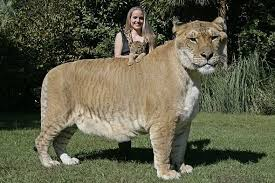
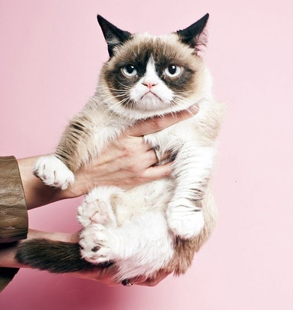
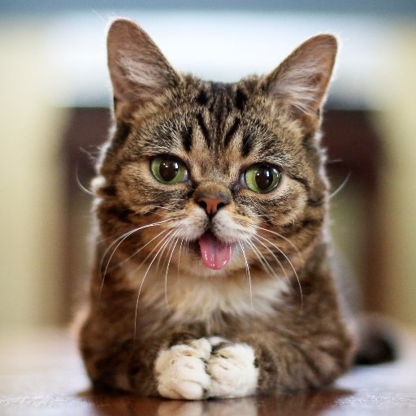
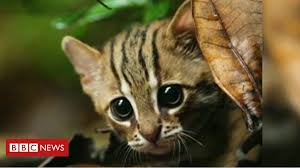

This website is all about cats and how YOU, in the East Yorkshire region, can do for cats in your area!
We have facts about famous cats, why cats are better than dogs and all the breeds in Britain.
We also have a map of the cats in East Yorkshire and some info on how to help Lost and Found cats.
Famous cats include:
Hercules - The world's biggest cat is a liger - a mix of Lion / Tigeress mix. he is 3.33m in length and weighs 922lb

Grumpy Cat - 'Tardar Sauce' has an underbite and feline dwarfism but too the internet by storm as his face looks permantely grumpy.

Lil Bub - a Tumblr sensation - she has feline dwarfism and a short lower jaw and toothless so her tounge sticks out

The Rusty-Spotted cat is the worlds smallest cat - 35-48cm in length and 1.8-3.5 lbs in weight.

Garfield - the cartoon cat - is a cheeky ginger cat in comics strips since 1976
Cat Records
The Longest jump of a Cat was achieved by Waffle the Warrior Cat USA, on 30 January 2018. he jumped 213.36 cm (7 ft)!
The loudest purr by a domestic cat is 67.8 db(A) and was achieved by Merlin on 2nd April 2015
The most tricks performed by a cat in one minute is 24, achieved by Didga Australia, on 5 February 2016
The longest fur on a cat is 25.68 cm (10.11 in) and belongs to Sophie Smith, USA, November 2013.
Cat facts
A Group of cats is called at Clowder Cats make about 100 different sounds..... Dogs only make around 10 A female cat is called a queen or a molly A Cat's heartbeats nearly twice as fast as a human heart - 110 - 140 beats per minute A cat's nose pad has a unique pattern of ridges, just like a human fingerprint.